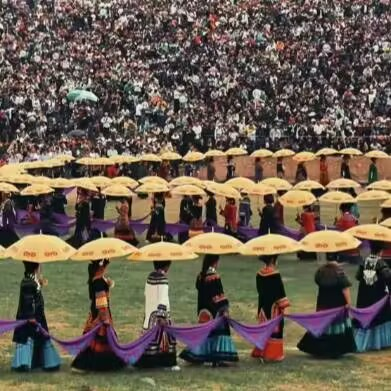
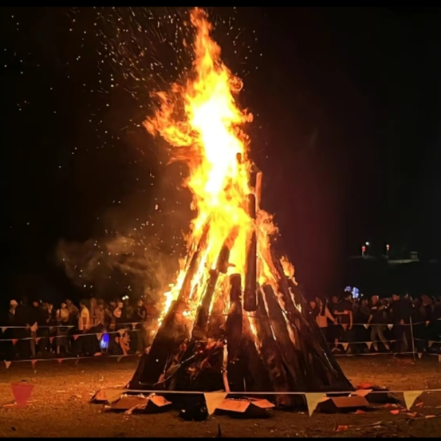
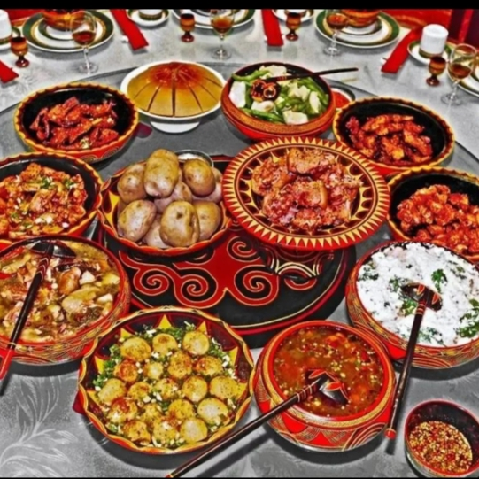

美丽凉山，彝乡彝情
美丽凉山，彝乡彝情
.
火把节
- 别名: 杜泽，则果格
- 起源: 火是彝族追求光明的象征。 彝族火把节是彝族最隆重盛大的传统节日，每年农历六月二十四至二十七日，彝族各村寨都要举行隆重的祭祀活动，祭天地、祭火、祭祖先、驱除邪恶，祈求六畜兴旺、五谷丰登，体现了彝族人民尊重自然规律，追求幸福生活的美好愿望。
- 形式: 彝族火把节一般历时三天三夜，分为祭火、玩火、送火三个阶段。这一天，村村寨寨都会宰牛杀羊，集体分享，并备酒肉祭祖。夜幕降临时，邻近村寨的人们会在老人们选定的地点搭建祭台，以传统方式击石取火点燃圣火，由毕摩（彝族民间祭司）诵经祭火。然后，家家户户，大人小孩都会从毕摩手里接过用蒿草扎成的火把，游走于田边地角，效仿阿什嫫以火驱虫的传说。火把节的三天三夜，都各具特色，每个晚上吃过晚饭，首先由某一家开始点燃火把，然后就争先恐后地燃起火把往村外走，人们唱起火把歌，歌声随着火把的漫延响彻山谷。随后按约定俗成的方向又形成一条火龙来到公共娱乐场地，他们将火把集中起来燃成一堆大火，全寨人围着火堆，快乐地跳舞游戏。
.


.


.
彝族年
彝族年，彝语称为"库斯"，"库"即年、"斯"即新，意思是新年，是四川省凉山彝族自治州大小凉山彝族传统的祭祀兼庆贺性节日。"库斯"一般选定在农历十月，庄稼收割完毕的季节。彝族年为3天。彝族年的头夜叫"觉罗基"，过年第一天叫"库斯"，第二天叫"朵博"，第三天叫"阿普机"。彝族年，彝语称为“库斯”，“库”即年、“斯”即新，意思是新年，是大小凉山彝族传统的祭祀兼庆贺性节日。彝族年是彝族的一个重要节日。从古到今，彝族对过年十分重视，也很热闹。关于彝族年始于何时，现已无从查考，凉山彝族过年中的许多仪式均与祖先崇拜相关，整个节日中充满浓厚的祖先至上色彩。彝族年为3天。彝族年的头夜叫“觉罗基”，过年第一天叫“库斯”，第二天叫“朵博”，第三天叫“阿普机”。全家团聚，或杀猪、杀鸡，庆贺当年人丁兴旺，来年吉祥安康等事宜。库斯意为新年，主要内容是祭祖，早晨鸡叫以后，全村就要宰杀年猪，年猪要从同村同寨年长或德高望重的人家开始，依次序宰杀。用年猪的胆、胰、尿包占卜主人家的吉凶，以猪胆饱满、色泽好，胰平展，无缺陷，尿包丰满为吉祥，预示来年人畜兴旺，家人安康，粮食丰收。同时分“舍富”、“舍民”两餐进餐，“舍富”主要是祭奠祖先，取猪肾、肝、舌、胰与荞粑一同煮熟，敬奉先祖。“舍民”是全家人集体餐。吃完“舍民”后，男子们要将猪肉切成条块，妇女们则要灌制好香肠，并当天要将鲜肉和香肠挂在火塘上烤烤，同时以展示主人家的年猪肥，人吉祥,并且显示出主人的富裕。